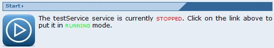

This functionality (and the corresponding section) is available only if a service is selected and the service has been stopped.
This functionality (and the corresponding section) is available only if a service is selected and the service has been stopped.

To start a services click on the "Start" section link in the Service Management page. It allows starting the selected service after a TOOLBOX reload or after a stopping. Starting a service simply means that it is ready to do its initialization and process incoming requests.